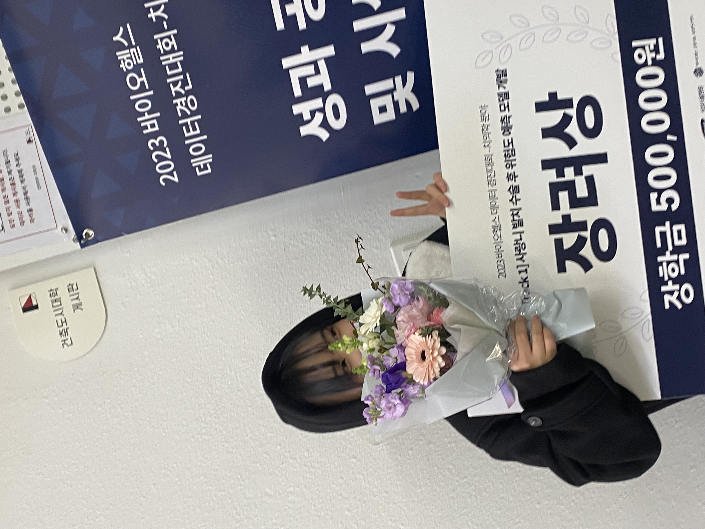

My Hobby
위 그림은 제가 직접 비즈로 만든 악세서리들 입니다!
전에 비즈가게에서 알바를 한 후 부터, 관심이 가서 재료들을 하나하나 모으며 만들다,
제 취미 생활 중 하나로 자리잡게 되었습니다 :D
My Activity

위 사진은 대회 중 시상식 때 촬영한 사진과 google research korea를 방문한 사진입니다!
여러 사진들 중 제일 기억에 남는 아주 유익했던 경험이었습니다!